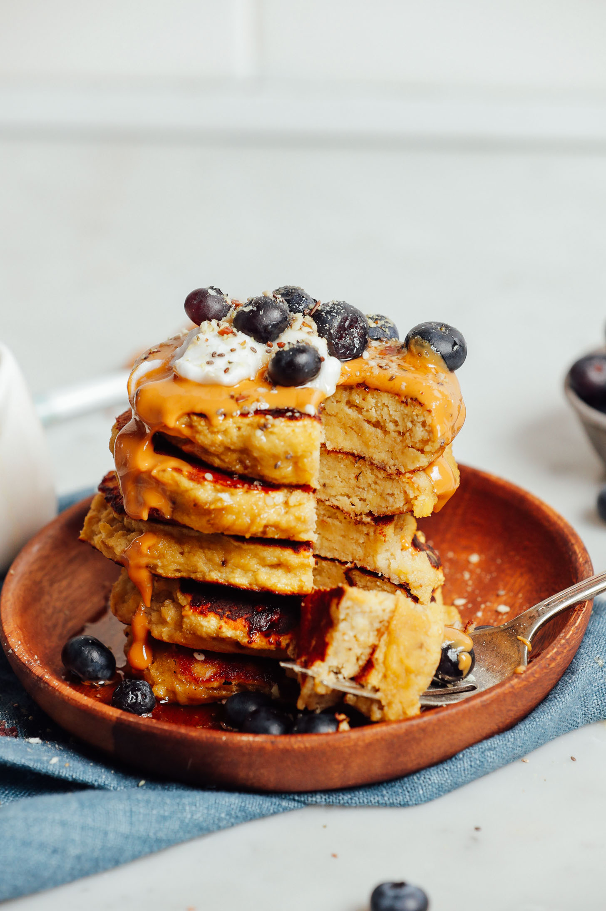

5 Ingedient Banana and Egg Pancakes

15 Minute Banana & Egg Pancakes
These traditional banana egg pancakes are fluffy and a bit more chewy.
Small amount of baking powder and coconut flour keeps these pancakes grain-free and gives
a cake-like texture.
Ingredients for 6 Pancakes
Main Ingredients
- 2 medium ripe bananas (yellow with brown spots
- 2 tsp baking powder (not necessary but helps them rise)
- 1 tsp vanilla extract (substitute for other extracts for personal preference)
- 2 large eggs
- 4-6 tbsp coconut flour
- cooking oil (coconut, olive or avocado for example)
Optional Toppings
- Berries / Fruit
- Nut Butter
- Seeds
- Coconut Yogurt
- Maple Syrup
Instructions
-
We've found that while these pancakes cook well on the stove-top, it can be helpful to
keep them warm in the oven where they will continue to bake and firm up while the remaining
pancakes cook. If this sounds helpful, preheat oven to 350 degrees F (176 C) and line a baking
sheet with parchment paper. However, this is not necessary, meaning you can skip this step.
-
To a large mixing bowl, add bananas and mash until only small bits remain.
Then add baking powder and vanilla extract and use a fork or whisk to mash
until thoroughly combined.
-
Next add eggs, break yolks with a fork or whisk, and whisk thoroughly until well combined.
-
Lastly, add coconut flour 1 Tbsp (9 g) at a time until a thick but scoopable batter is
achieved (thicker than your average pancake batter, but not so thick that it appears dry).
If you add too much coconut flour, add a little dairy-free milk to thin.
-
Heat a large skillet over medium heat. Once hot, add a little cooking oil to coat the pan.
Then spoon in roughly 3-Tbsp amounts of batter and reduce heat to low. These benefit from cooking
slower and lower than your average pancakes. Cover with a lid to help the center cook through.
-
Cook for 3-4 minutes, then remove lid and flip carefully. Cook for 3-4 minutes more (lowering
heat as needed if cooking too fast) or until the underside is golden brown. Transfer cooked pancakes
to the preheated oven on the prepared baking sheet (or to a serving plate). Continue cooking until
all batter is used up — as recipe is written, ~6 pancakes.
-
To serve, top with desired toppings, such as nut butter, sliced bananas or fresh fruit, dairy-free
yogurt, or maple syrup. We also love a sprinkle of seeds for more fiber and healthy fats.
-
Best when fresh, though leftovers keep covered in the refrigerator 3-4 days, or in the freezer up
to 1 month. To reheat, microwaving is most effective. Otherwise, toast or bake in a
350 degree F (176 C) oven until hot.
Source: https://minimalistbaker.com/5-ingredient-banana-egg-pancakes/